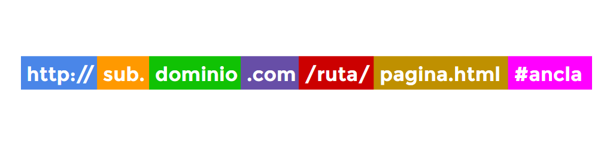

Etiquetas semanticas¶
Etiquetas HTML obsoletas¶
Con el paso y transición de versiones anteriores (HTML4 o XHTML) a HTML5, hay muchas etiquetas HTML que han sido marcadas como obsoletas y se recomienda dejar de utilizarlas cuanto antes. Es posible que algunas de ellas aún funcionen en navegadores actuales, pero llegará un momento que dejarán de ser soportadas por el navegador.
Aquí tienen una lista de las etiquetas HTML obsoletas que no deberían utilizarse:
Etiquetas obsoletas¶
Las siguientes etiquetas ya no se utilizan en HTML5 y han sido marcadas como obsoletas. Se recomienda no utilizarlas o utilizar una de las alternativas propuestas:
| Etiqueta obsoleta | Descripción | Alternativa |
|---|---|---|
<applet> |
Etiqueta para applets Java. | <embed>, <object> |
<acronym> |
Indica un acrónimo. | <acronym> |
<bgsound> |
Especifica un sonido de fondo. | <audio> |
<dir> |
Indica una lista de archivos o carpetas. | <ul> |
<frame> |
Define un marco específico. | <iframe> |
<frameset> |
Define un conjunto de marcos. | - |
<noframes> |
Indica una alternativa si el navegador no soporta marcos. | - |
<hgroup> |
Agrupa encabezados. | <header>, <div> |
<isindex> |
Campo para búscar en el documento. | <input> |
<listing>, <xmp> |
Fragmentos de código fuente. | <pre><code> |
<noembed> |
Alternativa (fallback) para contenidos. | <object> |
<strike> |
Muestra un texto tachado. | <del>, <s> |
<basefont> |
Define una tipografía por defecto. | CSS: font-family |
<big> |
Aumenta el tamaño del texto. | CSS: font-size |
<blink> |
Muestra el texto de forma parpadeante. | - |
<center> |
Centra el texto. | CSS: text-align |
<font> |
Cambia la tipografía o sus características. | CSS: font-family |
<marquee> |
Muestra el texto moviéndose de un lado a otro. | - |
<multicol> |
Columnas múltiples. | CSS: columnas |
<nobr> |
Evita que un texto haga un salto de línea. | CSS: white-space |
<spacer> |
Inserta un espacio horizontal. | |
<tt> |
Muestra el texto con una fuente monoespaciada. | CSS: font-family |
<menu> |
Crea menús de listados. | <ul> |
Atributos obsoletos¶
De la misma forma que ocurre con las etiquetas, existen una serie de atributos de ciertas etiquetas que han pasado a dejar de utilizarse. A continuación tienes una lista con algunos de dichos atributos:
| Atributo obsoleto | Pertenece a... | Descripción | Alternativa |
|---|---|---|---|
charset |
<a>, <link> |
Codificación del enlace. | |
name |
<a>, <embed>, <img>, <option> |
Establece un ancla. | id |
language |
<script> |
Indica el lenguaje utilizado. | type |
link |
<body> |
Indica el color de los enlaces. | CSS: :link |
alink |
<body> |
Indica el color de los enlaces. | CSS: :active |
vlink |
<body> |
Indica el color de los enlaces. | CSS: :visited |
bgcolor |
<body> |
Indica el color de fondo de página. | CSS: background-color |
align, valign |
<table> |
Indica la alineación vertical/horizontal. | CSS: alineaciones |
hspace, vspace |
<table>, <iframe> |
Indica espacios en tablas/marcos. | CSS: modelo de cajas |
allowtransparency |
<iframe> |
Permite transparencia. | |
frameborder |
<iframe> |
Indica el borde de los marcos flotantes. | |
scrolling |
<iframe> |
Permite o no hacer scroll en un marco. | |
align, border |
<img>, <table> |
Indica que alineación o borde utilizar. | |
cellpadding |
<table> |
Indica espacios entre celdas de tabla. | CSS: tablas |
cellspacing |
<table> |
Indica espacios entre celdas de tabla. | CSS: tablas |
nowrap |
<td>, <th> |
Establece fijo el tamaño de una celda. | CSS: tamaños |
Etiquetas HTML de texto¶
A grandes rasgos, en un documento HTML existen dos tipos de etiquetas HTML: las etiquetas que contienen fragmentos de texto (se utilizan para dar significado a esas palabras o fragmentos) y las etiquetas que agrupan conjunto de información (fragmentos de texto y/u otras etiquetas).
En el siguiente ejemplo, tenemos la etiqueta <p>, que pertenece al segundo grupo (agrupación), mientras que la etiqueta <strong> forma parte del primer grupo, que es del que vamos a hablar en esta sección:
<p>Hola, esto es un pequeño <strong>ejemplo</strong>.</p>
Fragmentos de texto¶
En primer lugar, existe una serie de etiquetas HTML simples para seleccionar un fragmento de texto y dotarlo de un significado especial. Por ejemplo:
| Etiqueta | Descripción |
|---|---|
<strong> |
Fragmento de texto importante o palabras clave. |
<em> |
Fragmento de texto enfatizado respecto a la frase que lo contiene. |
<mark> |
Fragmento de texto resaltado, simulando estar marcado con rotulador amarillo. |
<i> |
Fragmento de texto con voz o tono alternativo al resto. |
<b> |
Fragmento de texto sin importancia destacable (fines utilitarios). |
<u> |
Fragmento de texto para nombres propios o escritura incorrecta intencionada (sic). |
<s> |
Fragmento de texto inexacto o que ya no es relevante. (errores o inexactitudes) |
<span> |
Fragmento de texto sin significado (útil para seleccionar). |
<cite> |
Fragmento de texto con el título de un trabajo creativo: obras, libros... |
Ojo, algunas de estas etiquetas, en versiones anteriores de HTML tenían un significado diferente, como por ejemplo la etiqueta <b>, que antiguamente simbolizaba un fragmento de texto en negrita o la etiqueta <i>, que representaba un fragmento de texto en cursiva.
Por su parte, la etiqueta <span> es una versión en linea de la etiqueta <div>, ya que su misión es agrupar contenido de texto, mientras que la misión del <div> es agrupar otras etiquetas HTML que a su vez pueden agrupar otras y otras etiquetas HTML.
Modificación de significado¶
Con las siguientes etiquetas HTML también podemos modificar el significado de la información que contienen:
| Etiqueta | Atributos | Descripción |
|---|---|---|
<sup> |
Superíndice (242)2. | |
<sub> |
Subíndice (242)2. | |
<small> |
Anotaciones menores pequeñas puntualizaciones. | |
<q> |
cite |
Cita o frase extraída de otro contexto. |
<dfn> |
title |
Definición (término que posteriormente será definido). |
<abbr> |
title |
Abreviatura o acrónimo. |
Las etiquetas HTML <sup> y <sub> se utilizan para indicar superíndices y subíndices. De esta forma tenemos un mecanismo que nos permite diferenciar el número 242 del número 2422:
<p>El resultado de 24<sup>2</sup> es el valor de X<sub>a</sub>.</p>
Por otra parte, la etiqueta HTML <q> nos permite hacer referencia a una cita o frase extraída de otro contexto. Obsérvese que en esta etiqueta disponemos de un atributo opcional cite, mediante el cuál podemos hacer referencia a una URL (en este caso a la ficha de la película de Batman) que en este caso es de donde procede la frase:
<p>
<q cite="http://www.imdb.com/title/tt0468569/">
Hay hombres que solo quieren ver arder el mundo.
</q>
</p>
Es importante tener en cuenta que no se trata de la creación de un enlace para que el usuario haga clic, ya que estos se crean mediante la etiqueta <a> que veremos más adelante.
También tenemos las etiquetas <dfn> y <abbr> que nos permiten indicar definiciones y abreviaturas, y que ambas permiten el uso del atributo opcional title para indicar el significado de dicho término o abreviatura. Un ejemplo de ambas etiquetas combinadas:
<p>
El término <dfn><abbr title="Kilómetro">Km</abrr></dfn> es una unidad de longitud.
</p>
Los saltos de línea son etiquetas especiales de HTML para comenzar en una línea nueva (emular el efecto al pulsar ENTER). Al contrario que todas las que hemos visto, las etiquetas <br> son etiquetas que no necesitan etiqueta de cierre, por lo que sólo se escribe la etiqueta de apertura.
| Etiqueta | Descripción |
|---|---|
<br> |
Salto de línea (nueva línea). |
<wbr> |
Oportunidad de salto de línea (división silábica con guión). |
También existe la etiqueta <wbr> que se denomina oportunidad de salto de línea y posee el mismo funcionamiento de la división silábica con guión, es decir, indicamos donde es posible hacer un salto de línea si la situación lo requiere, como por ejemplo, si la palabra no cabe dentro de un elemento y se quiere evitar que desborde el contenido.
Aspectos informáticos¶
Existen una serie de etiquetas HTML ligeramente orientadas a aspectos informáticos como combinaciones de teclado del usuario o para representar variables matemáticas o informáticas:
| Etiqueta | Atributos | Descripción |
|---|---|---|
<kbd> |
Entrada de información del usuario (generalmente, combinación de teclado). | |
<samp> |
Salida de información de un programa informático. | |
<var> |
Variable (contexto matemático o informático). | |
<time> |
datetime |
Indica una fecha/hora legible para humanos, con formato para máquinas opcional. |
<data> |
value |
Información equivalente orientado a máquinas. |
<code> |
Fragmento de código fuente (en línea). |
Un ejemplo práctico de la etiqueta <kbd> sería modificar sus estilos CSS para obtener algo similar a CTRL+T, simplemente combinando el siguiente código HTML y CSS:
<p>Pulsa las teclas <kbd>CTRL</kbd>+<kbd>T</kbd>...</p>
<style>
kbd {
font-family: "Victor Mono", monospace;
padding: 2px 6px;
background: #eee;
border: 3px solid #bbb;
border-top-width: 1px;
border-bottom: 3px solid #777;
}
</style>
Si <kbd> muestra una entrada, por otro lado tenemos la etiqueta inversa, <samp>, que muestra la salida de un programa (mensaje, error o información) o <var> que nos permite indicar variables utilizadas en ejemplos matemáticos o informáticos.
Con la etiqueta <time> podemos indicar una fecha y/o hora en formato legible para humanos, indicando de forma opcional el atributo datetime con la fecha en un formato orientado a máquinas. De la misma forma se utiliza la etiqueta <data> para información genérica, en la que se puede usar su atributo value para indicar el texto equivalente orientado a máquinas:
<p>
<time datetime="2001-01-04">4 de Enero</time>
<data value="ESDLA3">El retorno del Rey</data>
</p>
Nótese también que la etiqueta <code> se utiliza para fragmentos de código fuente cortos, en línea, o lo que es lo mismo, de una sola línea. Para bloques de código más extensos se usa combinándola con otra etiqueta que veremos más adelante.
Etiquetas de edición¶
Por último, tenemos unas etiquetas orientadas a la edición posterior a la publicación de un texto o página web:
| Etiqueta | Atributos | Descripción |
|---|---|---|
<ins> |
cite, datetime |
Fragmento de texto o información añadida a posteriori de la publicación inicial. |
<del> |
cite, datetime |
Fragmento de texto o información eliminada a posteriori de la publicación inicial. |
Imaginemos que publicamos una página pero queremos editar la publicación para modificar o añadir información (o simplemente corregir errores), pero queremos reflejar esos cambios para que se vean que han sido insertados a posteriori.
Para ello podemos utilizar la etiqueta <ins>, pudiendo asociarle unos estilos CSS determinados. De la misma forma, podemos utilizar <del> para la eliminación de información sin eliminarla por completo, sino que aparezca tachada o con algún estilo visual que sugiera que ya no es válida (en gris y tachada, por ejemplo).
Ambas etiquetas admiten el uso de los atributos opcionales cite, que permite incluir una URL con más información sobre la información añadida/eliminada (idéntico al atributo cite de la etiqueta q) y datetime, que permite incluir la fecha/hora cuando se añadió/eliminó la información (funcionamiento idéntico al atributo datetime de la etiqueta time).
Etiquetas HTML de agrupación¶
Habíamos comentado que existían dos tipos de etiquetas HTML: las etiquetas que contienen fragmentos de texto (se utilizan para dar significado a esas palabras o fragmentos) y las etiquetas que agrupan conjunto de información (fragmentos de texto y/u otras etiquetas).
En esta ocasión, vamos a ver el segundo grupo, que son las etiquetas que se utilizan para agrupar y organizar información (y otras etiquetas). Veamos un ejemplo:
<div>
<p>Hola, esto es un primer párrafo de ejemplo.</p>
<p>Y esto, es un segundo párrafo de ejemplo.</p>
</div>
Agrupaciones¶
Las siguientes etiquetas se utilizan para agrupar información, como es el caso de las etiquetas <div> o <p> que vimos en el ejemplo mostrado anteriormente:
| Etiqueta | Atributos | Descripción |
|---|---|---|
<div> |
Capa o división utilizado para agrupar varias etiquetas HTML. | |
<p> |
Define un párrafo de texto (con sus etiquetas HTML para texto). | |
<pre> |
Establece un texto preformateado (respetando espacios y saltos de línea). | |
<blockquote> |
cite |
Agrupa información y características de una cita (autor, fuente, etc...). |
<main> |
Contenedor para englobar la parte principal de la página. | |
<hr> |
Indica una separación temática del texto. |
La etiqueta <pre> se utiliza para mostrar texto respetando el formato con el que está escrito (espacios en blanco, saltos de línea, etc...). También es muy habitual utilizarlo junto a la etiqueta <code> anidada en su interior, de forma que tenemos un bloque de código preformateado:
<pre>
<code class="language-javascript">
function mensaje(s) {
console.log(s);
}
</code>
</pre>
Como se puede ver, en el caso de crear bloques de código, suele ser una buena práctica incluir un atributo class con el lenguaje que estamos utilizando. Esto no es una funcionalidad nativa de HTML5, pero muchas librerías de Javascript nos permiten resaltar la sintaxis dependiendo del lenguaje de programación indicado (ya que varía de uno a otro).
Por otro lado, la etiqueta <blockquote> suele utilizarse para agrupar información referida a una cita o frase:
<blockquote cite="http://es.wikiquote.org/wiki/Fight_Club">
<p>La primera regla del Club de la Lucha es: Nadie habla sobre el Club de la Lucha.</p>
<footer>
<cite class="author">Tyler Durden</cite> en
<cite class="title">El Club de la Lucha</cite>
</footer>
</blockquote>
Obsérvese que utilizamos el atributo opcional cite para indicar una referencia externa de la fuente de la cita. Luego, en su interior, tenemos un párrafo que contiene la frase en cuestión, seguida de una sección semántica (pie de cita) que a su vez contiene referencias al autor de la cita y el título de la película.
Listas¶
En HTML podemos crear listas de información de una forma muy sencilla. Empecemos por las etiquetas disponibles:
| Etiqueta | Atributos | Descripción |
|---|---|---|
<ul> |
Define una lista sin orden. Se trata de la etiqueta contenedora. | |
<ol> |
start, reversed, type |
Define una lista numerada (con orden). Etiqueta contenedora. |
<li> |
value |
Define un ítem de la lista. |
En primer lugar debemos elegir la etiqueta <ul> o la etiqueta <ol> dependiendo de si queremos una lista donde no importa el orden (lista de objetos que tengo en el bolsillo) o una lista en la que si importa el orden (lista de canciones preferidas de mayor a menor). Una vez elegido, comenzamos a añadir ítems, uno por etiqueta <li>. La forma más básica de crear una lista sería la siguiente:
<ul>
<li>Primer ítem.</li>
<li>Segundo ítem.</li>
<li>Tercer ítem.</li>
</ul>
Esto crearía una lista, donde cada uno de los ítems aparecería con un circulo negro cada uno. Una particularidad poco conocida es que HTML nos permite omitir las etiquetas de cierre </li> si van seguidas de otra etiqueta de apertura <li>.
Si reemplazamos la etiqueta <ul> por <ol> los ítems pasan a ser ítems numerados (por defecto, números enteros a partir de 1). Las etiquetas <ol> permiten indicar varios atributos opcionales para modificar la forma en que se numera cada ítem:
| Atributo | Valor | Significado |
|---|---|---|
start |
[número] | Indica el número del primer ítem de la lista y del que empezará a contar. |
reversed |
- | |
type |
1 | a | A | i | I |
Lista con números enteros, letras o números romanos (en minúsculas o mayúsculas). |
El siguiente ejemplo muestra una lista numerada con letras minúsculas, que empiezan en c, pero irán en orden inverso, por lo que terminarán en c:
<ol start="c" type="a" reversed>
<li value="1">Primer ítem.</li>
<li value="2">Segundo ítem.</li>
<li value="3">Tercer ítem.</li>
</ol>
Obsérvese que también se puede establecer el atributo value a cada ítem de la lista para asignarle, por ejemplo, un valor numérico o ponderarlos.
Listas de descripciones¶
De la misma forma que podemos crear listas genéricas, podemos crear listas de descripciones. La diferencia es que este tipo de listas se suele utilizar cuando queremos asociar pares de nombre-valor. Primero veamos las etiquetas:
| Etiqueta | Descripción |
|---|---|
<dl> |
Define una lista de descripciones. Es la etiqueta contenedora. |
<dt> |
Término de la descripción. Contiene el nombre o término a describir. |
<dd> |
Descripción o valor asociado al término. Pueden existir varios por término. |
Veamos un ejemplo práctico de este tipo de listas:
<dl>
<dt>Gallina</dt>
<dd>Ave doméstica del orden de las galliformes.</dd>
<dd>Cobarde, pusilánime.</dd>
</dl>
Ilustraciones (figuras)¶
Por último, dentro del apartado de etiquetas de agrupación tenemos las nuevas etiquetas <figure> y <figcaption>. Estas etiquetas se utilizan para agrupar conceptos formados por una ilustración (figura) y una leyenda. Con estos elementos de agrupación se puede agrupar una imagen y su correspondiente pie de foto, pudiendo ampliar a otro tipo de contenidos multimedia como video o audio.
| Etiqueta | Descripción |
|---|---|
<figure> |
Establece una figura, que puede contener una serie de elementos diversos. |
<figcaption> |
Asocia una leyenda, generalmente texto, a la figura anterior. Opcional. |
Veamos un ejemplo:
<figure>
<img src="http://lenguajehtml.com/img/html5-logo.png" alt="Logotipo de HTML5" />
<figcaption>Logotipo oficial del lenguaje de marcas HTML5.</figcaption>
</figure>
Nótese que en la ilustración o figura, se puede contener todo tipo de elementos, no solo imágenes. Ejemplos válidos podrían ser videos, párrafos de texto o incluso contenido multimedia.
Enlaces o hipervínculos¶
Una de las etiquetas más importantes de HTML (sino la que más) es la etiqueta <a>. Esta etiqueta se utiliza para crear los llamados enlaces, vínculos o hipervínculos. La idea es establecer una referencia a una dirección o URL donde está alojado ese otro documento de destino, que puede ser una página web, un archivo PDF, una imagen o cualquier otro tipo de documento.
| Etiqueta | Descripción |
|---|---|
<a> |
Etiqueta para hacer referencia a otras páginas web o recursos como documentos o archivos. |
Esta etiqueta debe tener, como mínimo, el atributo href, ya que es el atributo con el que se especifica la dirección URL al documento que se quiere enlazar. Aún así, la etiqueta <a> también tiene varios atributos opcionales, veamos un resumen de todos ellos:
| Atributo | Valor | Descripción |
|---|---|---|
href |
URL | Enlace al documento que se quiere cargar. Atributo obligatorio. |
download |
nombre.ext | Descarga el enlace (href) en lugar de abrirlo. Si se indica valor, se renombra. |
target |
_blank |
Abre el enlace en una nueva pestaña. |
_self |
Abre el enlace en la pestaña o <iframe> actual. |
|
_parent |
Abre el enlace en el documento padre. | |
_top |
Abre el enlace en el documento raíz (padre global). | |
| nombre | Abre el enlace en el <iframe> con el nombre especificado. |
|
rel |
alternate |
Indica que el enlace es una versión alternativa (idioma o formato diferente). |
author |
Indica que el enlace es la web del autor de la página actual. | |
bookmark |
El enlace es un permalink a la sección de la página actual. | |
help |
Indica que el enlace ofrece ayuda para la página actual. | |
license |
Indica que la página actual está cubierta por la licencia referenciada. | |
prev |
Indica que el enlace es la parte previa del documento actual. | |
next |
Indica que el enlace es la parte siguiente del documento actual. | |
nofollow |
Indica que el enlace no está supervisado por el autor del sitio web. | |
noreferrer |
El navegador no envía la página de procedencia al visitar el enlace. | |
prefetch |
El navegador precarga el enlace (es probable que se haga clic) | |
search |
Indica que el enlace es una página para realizar búsquedas. | |
tag |
Asocia una etiqueta al enlace especificado, en relación al documento actual. | |
hreflang |
Idioma | Código ISO 639-1 del idioma del documento. |
type |
Tipo | Tipo de contenido MIME al que se enlaza. Atributo no obligatorio. |
El soporte del atributo download podría no funcionar en navegadores no actuales, como versiones antiguas de Chrome o Firefox, o desde Internet Explorer:
Veamos a continuación algunos ejemplos de enlaces utilizando algunos atributos indicados en la tabla superior para comprender así su funcionamiento:
<ul>
<li><a rel="author" href="http://www.emezeta.com/">Emezeta</a></li>
<li><a href="http://lenguajecss.com/" target="_blank">LenguajeCSS</a></li>
<li><a href="http://pagina.com/documento.pdf" download="A-38.pdf">PDF</a></li>
<li><a href="http://pagina.com/documento-en.pdf" hreflang="en">PDF</a></li>
</ul>
Esquema de una URL¶
Al indicarse una URL, tenemos varias formas de escribirla. Conviene conocer bien la estructura de una URL, para diferenciar cada una de sus partes. Este sería el esquema completo de un enlace completo:

Protocolo¶
Existen varios protocolos diferentes y es la parte inicial de la URL. Probablemente, el más utilizado sea http://, aunque https:// también es frecuentemente muy utilizado, ya que se utiliza para cifrar información y que la transmisión sea más segura. Al escribir una URL nunca debemos olvidarnos del protocolo y escribir sólamente la dirección, ya que el vínculo podría no funcionar correctamente. Algunos protocolos de ejemplo:
| Protocolo | Descripción |
|---|---|
http:// |
Protocolo de transferencia de hipertexto. Es el que se usa habitualmente para páginas webs. |
https:// |
Protocolo seguro de transferencia de hipertexto. Usado para cifrar información sensible. |
ftp:// |
Protocolo de transferencia de ficheros. Similar a HTTP, pero orientado a enviar ficheros. |
whatsapp:// |
Protocolo de WhatsApp. Se puede interactuar con WhatsApp si el usuario lo tiene instalado. |
// |
Protocolo utilizado en la URL actual. Utiliza http o https según la página original. |
!!!
Un detalle importante sobre la última opción de la tabla anterior. Al indicar // al inicio de un enlace, le decimos al navegador que establezca http:// o https:// dependiendo de como se cargara el documento actual. Si el documento actual se cargó como http:// reemplazará // por http://, pero si el documento actual se cargó como https:// reemplazará // por https://. Esto nos permite más flexibilidad a la hora de cargar documentos o recursos.
Dominio¶
La siguiente parte de la URL es el dominio del sitio web que queremos enlazar. El dominio generalmente se compone de un subdominio (opcional), el nombre de dominio y el dominio de nivel superior o TLD. Por ejemplo, las famosas www no son más que un subdominio utilizado tradicionalmente para páginas webs. Por otra parte, hay muchísimos TLD para sitios web:
| Dominio | Descripción |
|---|---|
| .com | Originalmente para sitios comerciales, actualmente el más utilizado. Difícil conseguir dominio libre. |
| .net | Quizás, la segunda opción por excelencia. Su nombre proviene de la palabra Internet. |
| .org | Originalmente para organizaciones, actualmente es la tercera opción más utilizada. |
| .es | Sitios webs orientados a España. |
| .com.es | Dominio de segundo nivel orientado a España. |
| .cat | Sitios webs orientados a Cataluña. Muy usado para sitios webs de gatos. |
| .la | Sitios webs orientados a Laos. Muy usado para domain-hacks. |
| .me | Sitios webs orietnados a Montenegro. Muy usado para domain-hacks. |
| .io | Sitios webs orientados al Territorio Británico de Océano Índico. Muy usado como Input/Output. |
| .dev | Sitios webs orientados al mundo del desarrollo o programación (developers). |
| .blog | Nuevos gTLD (dominios genéricos) orientados a categorías. En este caso, a blogs. |
| .viajes | Nuevos gTLD (dominios genéricos) orientados a categorías. En este caso, a webs sobre viajes. |
Partes de la URL¶
-
Rutas: La parte de la ruta de una página web es equivalente a las carpetas o directorios donde almacenamos nuestros archivos. En el caso que una dirección termine en esta parte y no indique nada más, generalmente, el servidor que aloja la página web dirige al usuario a una página llamada
index.htmloindex.htmpor defecto. Esto es configurable en la parte del servidor, y depende de totalmente de la configuración del servidor web utilizado. -
Página o documento: La última parte de la URL suele ser un documento HTML como el del ejemplo:
pagina.html. En algunos casos, la extensión.htmles abreviada como.htm. Dependiendo del servidor web y los componentes instalados, es posible que se utilicen otro tipo de documentos con lenguajes de programación del lado del servidor, como podría ser por ejemplopagina.php. Si se trata de otro documento, como un archivo PDF o un video, el navegador intentará abrirlo directamente, y si no puede, lo descargará para que el usuario lo abra con alguna aplicación de su sistema. -
Query strings: Una parte no mencionada en el esquema anterior son las cadenas de consulta del usuario, más frecuentemente utilizadas en lenguajes como Javascript o lenguajes del servidor. Básicamente, son variables que contienen información y se envían en la URL, como por ejemplo, en la búsqueda de Google:
| URL | Variable | Contenido | Significado |
|---|---|---|---|
https://www.google.com/search?q=gato |
q | gato | Busca "gato" |
https://www.google.es/search?q=gato&tbm=isch |
q | gato | Busca "gato" |
| tbm | isch |
- Ancla: Por último tenemos el ancla, que no es más que un fragmento de texto precedido por el carácter
#. Al encontrarse con esto, el navegador busca una etiqueta HTML que tenga un atributo id con ese texto, y posiciona al usuario en esa parte de la página. Se utiliza para acceder directamente a permalinks o secciones concretas de una página. Obviamente, esta parte es opcional.
!!!
Recientemente también ha parecido una nueva característica llamada scroll to text fragments. Se basa en escribir el texto #:~:text=<palabrainicial>,<palabrafinal> a continuación de la URL. Con esto, el navegador hace scroll a la parte de la página donde se encuentra el fragmento de texto que comienza por la palabra inicial y termina por la palabra final. También se pueden indicar frases en lugar de palabras.
Estado de un enlace¶
Por defecto, los enlaces tienen 3 estados diferentes:
-
Enlaces sin visitas: Un enlace que no ha sido visitado aún (pseudoclase :link en CSS) es representado por los navegadores como un enlace de color azul y subrayado. Se suele aconsejar no realizas cambios bruscos en los estilos de los enlaces, ya que los usuarios que no estén acostumbrados al sitio web no reconocerán instantáneamente un enlace si no es de color azul y/o está subrayado.
-
Enlaces visitados: Un enlace que ha sido visitado previamente (pseudoclase :visited en CSS) es representado por los navegadores como un enlace de color lila y subrayado.
-
Enlaces activos: Un enlace está en estado activo (pseudoclase :active en CSS) cuando el usuario está pulsando sobre el enlace con el ratón y a la misma vez no ha dejado de pulsar en él. Se suele utilizar para destacar el clic visualmente.
Rutas relativas o absolutas¶
A la hora de indicar una URL, generalmente se puede hacer de varias formas:
| Tipo de ruta | Ejemplo | ¿Dónde busca el archivo? |
|---|---|---|
| Sin ruta | imagen.jpg | En la misma carpeta del .html actual. |
| Relativa ascendente | img/imagen.jpg | En la carpeta img de la carpeta actual. |
| Relativa descendente | ../imagen.jpg | En la carpeta anterior a la actual. Evitar. |
| Relativa global | /img/imagen.jpg | El primer / simboliza el principio de la URL. |
| Absoluta | https://pagina.com/img/imagen.jpg | Exactamente en la URL indicada. |
{kind=link}
El usuario puede utilizar la forma de indicar la ruta que prefiera, eso sí, se aconseja ser coherente y utilizar siempre que se pueda un mismo formato de ruta. Particularmente, tiendo a evitar el tipo de ruta relativa descendente, ya que podría generar un código feo y ofuscado.
Etiquetas HTML de sección¶
En versiones anteriores a HTML5, al crear la estructura de una página, normalmente utilizabamos etiquetas <div> para ir agrupando secciones de la página. Unido a esto, ibamos añadiendo id o clases (atributos) dependiendo de nuestro interés, para que quedase más claro. Una estructura como la que menciono podría ser la siguiente:
<div class="articulo">
<h1>Título del artículo</h1>
<p class="intro">Pequeña introducción.</p>
<p class="contenido">Aquí va el texto del artículo en cuestión con sus detalles.</p>
<p class="pie">Escrito por Manz</p>
</div>
Vemos que en esta estructura tenemos una agrupación que contiene todos los elementos de un artículo, donde el primer elemento es un encabezado <h1> (titular), luego un párrafo de introducción, seguido de un párrafo de contenido y un último párrafo a pie de artículo. La estructura podría ser más sencilla o más complicada, pero nos viene bien como ejemplo de introducción a este tema.
Nótese que los elementos utilizados <div> y <p> no tienen una semántica específica, salvo que son etiquetas de agrupación y que la segunda contiene un párrafo. En HTML5 se introducen una serie de etiquetas de agrupación que funcionan exactamente como un<div>, pero que además tienen un significado semántico porque indican la naturaleza del contenido que agruparán.
Veamos el ejemplo anterior, utilizando etiquetas semánticas:
<article>
<header>
<h1>Título del artículo</h1>
<p class="intro">Pequeña introducción.</p>
</header>
<p class="contenido">Aquí va el texto del artículo en cuestión con sus detalles.</p>
<footer>
<p>Escrito por Manz.</p>
</footer>
</article>
~~~~
De esta forma, preparamos nuestro documento HTML para que cualquier navegador, robot de buscador o aplicación o sistema informático sea capaz de leer el documento HTML y conocer perfectamente la naturaleza del contenido de dicha sección.
### Etiquetas semánticas
Veamos un listado de las **etiquetas semánticas** que se introducen en HTML5 (_los encabezados ya existían en versiones anteriores_):
Etiqueta | Descripción
:---|:---
`<article>` |Artículo. Parte principal de un escrito (_posts, mensaje en foros, comentario..._)
`<nav>`|Apartado de navegación (_enlaces de secciones, categorías, etc..._)
`<header>`|Cabecera visual de la página (_logotipo, título, etc..._). No confundir con `<head>`.
`<h1>`|Encabezado de nivel 1. Equivalente al título del documento.
`<h2>`|Encabezado de nivel 2. Equivalente al tema del documento.
`<h3>`|Encabezado de nivel 3. Equivalente a la sección de un tema.
`<h4>`|Encabezado de nivel 4. Equivalente a un apartado de la sección.
`<h5>`|Encabezado de nivel 5. Equivalente a un ejemplo del apartado.
`<h6>`|Encabezado de nivel 6. Equivalente a un subapartado del ejemplo.
`<footer>`|Pie de página de una sección (_o del documento completo_).
`<section>`|Sección o grupo temático de contenido. No usar sólo para dar estilo.
`<aside>`|Agrupación de contenido no relacionado con el tema principal del documento.
`<address>`|Agrupación con la información de contacto del autor del artículo o documento.
Nótese que las etiquetas `<article>` pueden contener otras etiquetas `<article>`, como por ejemplo comentarios dentro de artículos:
~~~html
<article class="post">
<p>Este sería el texto del artículo.</p>
<article class="comentario">
<p>Aquí iría el texto del comentario.</p>
</article>
</article>
Etiquetas HTML de tablas¶
Las tablas están incluidas en HTML desde sus primeras versiones y son una forma fantástica de mostrar datos claramente. Además, si las construimos de forma semántica y correctamente, es muy sencillo darle estilos desde CSS y cambiar su diseño con unas cuantas propiedades CSS, puesto que mediante las etiquetas que la componen se puede hacer referencia a cada parte de la misma.
Tablas básicas¶
Una tabla puede ser sencilla o compleja, dependiendo de nuestro objetivo y la cantidad de etiquetas o atributos a utilizar. Así pues, veamos primero las etiquetas básicas para crear una tabla de la forma más sencilla posible:
| Etiqueta | Descripción |
|---|---|
<table> |
Etiqueta contenedora que tendrá en su interior toda la tabla. |
<tr> |
Table Row. Etiqueta contenedora de cada fila de la tabla. |
<td> |
Table Data. Cada una de las celdas de la tabla. |
<th> |
Table Header. Cada una de las celdas de cabecera de la tabla. |
La etiqueta <table> sería el elemento que contendría todos los elementos de la tabla, mientras que <th> y <td> se utilizarían para cada uno de los campos de la tabla (cabecera y celda respectivamente). Cada vez que se quisiera añadir una nueva fila, habría que incluirlo todo dentro de una etiqueta <tr>.
Estas cuatro etiquetas serían las etiquetas necesarias para crear una tabla. Un ejemplo muy sencillo de una tabla de 3x2 celdas (exceptuando las cabeceras), sería la siguiente:
<table>
<!-- Cabecera -->
<tr>
<th>Título columna 1</th>
<!-- Celda de cabecera de la columna 1 -->
<th>Título columna 2</th>
<!-- Celda de cabecera de la columna 2 -->
<th>Título columna 3</th>
<!-- Celda de cabecera de la columna 3 -->
</tr>
<!-- Primera fila -->
<tr>
<td>Celda 1x1</td>
<!-- Primera celda de la primera fila -->
<td>Celda 2x1</td>
<!-- Segunda celda de la primera fila -->
<td>Celda 3x1</td>
<!-- Tercera celda de la primera fila -->
</tr>
<!-- Segunda fila -->
<tr>
<td>Celda 1x2</td>
<!-- Primera celda de la segunda fila -->
<td>Celda 2x2</td>
<!-- Segunda celda de la segunda fila -->
<td>Celda 3x2</td>
<!-- Tercera celda de la segunda fila -->
</tr>
</table>
En este caso de ejemplo tendríamos una sencilla tabla de 3x2 celdas. Por defecto, en la tabla se crea de forma que se adapta al número de celdas que tiene la primera fila. Es decir, si en el primer elemento <tr> se indican 3 elementos <th>, la tabla esperará siempre 3 elementos en cada fila. Si indicaramos menos, las celdas correspondientes donde deberían estar aparecerían vacías (sin celda). Si añadieramos una de más, se saldría de la tabla.
Además, si al código HTML anterior le aplicamos unos apropiados estilos CSS de tablas, junto a cambios de colores, fuentes, márgenes, rellenos y otros aspectos visuales, podremos cambiar el diseño de la tabla en poco más que un par de líneas.
El siguiente código CSS puede ser utilizado para mostrar esos cambios sobre la tabla anterior:
<style>
/* Cambios sobre la propia tabla */
table {
border-collapse: collapse;
border: 1px solid #ccc;
}
/* Espacio de relleno en celdas y cabeceras */
td,
th {
padding: 10px;
}
/* Modificación de estilos en cabeceras */
th {
background: #000;
color: #fff;
text-transform: uppercase;
}
/* Modificación de estilos en celdas */
td {
text-align: center;
border-bottom: 2px solid #111;
color: #333;
font-size: 18px;
}
</style>
<table>
<!-- Cabecera -->
<tr>
<th>Título columna 1</th>
<!-- Celda de cabecera de la columna 1 -->
<th>Título columna 2</th>
<!-- Celda de cabecera de la columna 2 -->
<th>Título columna 3</th>
<!-- Celda de cabecera de la columna 3 -->
</tr>
<!-- Primera fila -->
<tr>
<td>Celda 1x1</td>
<!-- Primera celda de la primera fila -->
<td>Celda 2x1</td>
<!-- Segunda celda de la primera fila -->
<td>Celda 3x1</td>
<!-- Tercera celda de la primera fila -->
</tr>
<!-- Segunda fila -->
<tr>
<td>Celda 1x2</td>
<!-- Primera celda de la segunda fila -->
<td>Celda 2x2</td>
<!-- Segunda celda de la segunda fila -->
<td>Celda 3x2</td>
<!-- Tercera celda de la segunda fila -->
</tr>
</table>
Combinar celdas¶
Cada etiqueta <td> y <th> puede incluir una serie de atributos para modificar su comportamiento o para establecer relaciones semánticas entre celdas. Probablemente, las más interesantes sean colspan y rowspan:
| Atributo | Valor | Descripción |
|---|---|---|
colspan |
número | Número de columnas que la celda abarcará. |
rowspan |
número | Número de filas que la celda abarcará. |
headers |
ids | Id de los elementos <th> con los que tiene relación la celda. |
scope (solo <th>) |
row | La cabecera se aplica a alguna de las filas adyacentes. |
| col | ||
| rowgroup | ||
| colgroup | ||
| auto | ||
abbr (solo <th>) |
nombre | Abreviatura o información alternativa sobre la cabecera. |
Con estos atributos podemos indicar que ciertas celdas abarquen más espacio y se combinen con el espacio que ocuparía otra celda adyacente y así crear estructuras de tabla más flexibles.
Imaginemos que al código HTML de la tabla anterior, le añadimos antes de la primera fila de <td>, una nueva fila con una sola celda <td> con un atributo colspan a 3. Con esto estaríamos indicando que esa nueva fila (originalmente, de 3 celdas) va a abarcar las 3 celdas de espacio con una sola celda:
<style>
td {
border: 1px solid black;
}
</style>
<table>
<!-- ... -->
<tr>
<td colspan="3">Datos adicionales</td>
<!-- Abarca 3 celdas -->
</tr>
<!-- Primera fila -->
<tr>
<td>Celda 1x1</td>
<!-- Primera celda de la primera fila -->
<td>Celda 2x1</td>
<!-- Segunda celda de la primera fila -->
<td>Celda 3x1</td>
<!-- Tercera celda de la primera fila -->
</tr>
<!-- ... -->
</table>
El atributo rowspan actuaría exactamente igual, pero abarcando filas en vertical, en lugar de columnas en horizontal. También se podrían combinar. Los atributos colspan y rowspan podrán tener como máximo el número de columnas o filas de la tabla, si tuviera un número mayor, simplemente se utilizará el máximo de la tabla.
Organización de tablas¶
Por defecto, al crear una tabla, el navegador se encarga de crearla a medida que va leyendo las etiquetas, por lo que la tabla se crea en el orden que se han especificado sus elementos, de arriba a abajo. Sin embargo, podemos utilizar una serie de etiquetas contenedoras que establecerán la zona de la tabla donde deben aparecer su contenido:
| Etiqueta | Descripción |
|---|---|
<thead> |
Etiqueta contenedora de la cabecera de la tabla. Parte superior de la tabla. |
<tbody> |
Etiqueta contenedora del cuerpo de la tabla. Parte central de la tabla. |
<tfoot> |
Etiqueta contenedora del pie de la tabla. Parte inferior de la tabla. |
<caption> |
Establece un título de la tabla, independientemente de su posición. |
A las etiquetas de tabla ya vistas, podemos añadir estas etiquetas, pudiendo definir la zona donde aparecerán sin que, necesariamente tengan el orden correcto. Veamos un ejemplo:
<table>
<!-- Table footer: pie de la tabla (tfoot) -->
<tfoot>
<tr>
<td>Pie de tabla 1</td>
<td>Pie de tabla 2</td>
</tr>
</tfoot>
<!-- Table header: cabecera de la tabla (thead) -->
<thead>
<tr>
<th>Columna 1</th>
<th>Columna 2</th>
</tr>
</thead>
<!-- Table body: cuerpo de la tabla (tbody) -->
<tbody>
<tr>
<td>Celda 1</td>
<td>Celda 2</td>
</tr>
</tbody>
<!-- Leyenda o título de la tabla -->
<caption>
Título de la tabla
</caption>
</table>
En este ejemplo, a pesar de seguir el orden tfoot, thead, tbody, caption definido en el HTML, el navegador lee la tabla y la redistribuye según su significado semántico, de modo que lo organiza dejándolo con el orden caption, thead, tbody, tfoot. De esta forma, estas etiquetas nos pueden servir para indicar secciones concretas de la tabla, independientemente del lugar donde estemos escribiendo, algo que puede ser muy útil si estamos creando la tabla de forma dinámica mediante algún lenguaje de programación.
Agrupación de columnas¶
Las tablas, al definirse en el código siguiendo una estructura horizontal, hacen complejo el aplicar o realizar una serie de cambios a una columna. Existe una serie de etiquetas para agrupar o seleccionar columnas y así poder realizar tareas sobre ellas, como por ejemplo, asociarle una clase específica o darle estilos CSS a una columna concreta de la tabla, sin necesidad de ir celda por celda.
Para ello, utilizaremos las dos siguientes etiquetas:
| Etiqueta | Descripción |
|---|---|
<colgroup> |
Etiqueta contenedora de columnas. Crea una agrupación de columnas. |
<col> |
Etiqueta que representa a una columna de la tabla. |
Estas etiquetas pueden tener especificado un atributo llamado span para así aplicar los atributos de la etiqueta <col> al número de columnas adyacentes que se indiquen en dicho atributo. Veamos un ejemplo:
<table>
<tr>
<th>Columna 1</th>
<th>Columna 2</th>
<th>Columna 3</th>
</tr>
<tr>
<td>Data 1</td>
<td>Data 2</td>
<td>Data 3</td>
</tr>
<tr>
<td>Data 4</td>
<td>Data 5</td>
<td>Data 6</td>
</tr>
<colgroup>
<col style="background:red">
<col span="2" style="background:yellow">
</colgroup>
</table>
Vemos que en el ejemplo se está aplicando un color de fondo rojo a la primera columna, mientras que a las dos siguientes un color de fondo amarillo, ya que tiene indicado el atributo span a 2 y se aplica a las dos siguientes columnas: la segunda y la tercera.
!!!
Existen una serie de atributos de etiquetas relacionadas con las tablas que están obsoletos y ya no se deben utilizar, como por ejemplo align, bgcolor o valign. Tienes más información en etiquetas HTML obsoletas.
Fuente: Lenguaje de Html por Manz